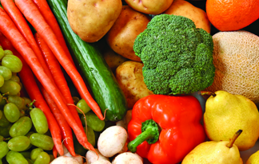

Что такое Delivery Club?
В 1522 году в Неаполе появился прообраз богини итальянской кухни, ароматной, сочной, вкуснейшей и разнообразной, которая стала одним из самых популярных блюд на сегодняшнее время по всему земному шару. Классическая - тонкая круглая основа из теста и томаты с сыром сверху. Мы едим ее с морепродуктами, мясом, сырами… С чем только она не бывает! Конечно, вы догадались, что речь идет о пицце – традиционном итальянском блюде, которое очень быстро покорило сердца жителей всего мира. Пицца есть в ресторанах Австралии, Индии, Бразилии и, конечно же, у нас. В каждой стране – со своими отличиями и рецептурой.
Например, пицца в американском стиле имеет больше всего ингредиентов, соответственно, она самая сочная и большая. Именно такую предлагает вам «Сити Пицца». Кстати, бесплатная доставка пиццы по всей Москве подразумевает также развозку различных салатов, закусок, сэндвичей и десертов. А каким только разнообразием может похвастать пицца и соусы! Благодаря большему размеру пиццы, в сравнении с традиционным, она дольше сохраняет тепло и аромат во время путешествия в любой уголок Москвы! Доставка пиццы на дом подарит вам минуты вкуснейшего удовольствия без долгого ожидания или потраченного времени на покупку продуктов и готовку.
Доставка еды в офис порадует вас в рабочий час, а десерт усластит ваше рабочее время. «Сити Пицца» позволяет легко и быстро сделать заказ через интернет и выбрать, что пожелает душа из большого ассортимента.
Это возможность получить наслаждение от разнообразной вкуснейшей пиццы в любом удобном для вас месте и времени!
В 1522 году в Неаполе появился прообраз богини итальянской кухни, ароматной, сочной, вкуснейшей и разнообразной, которая стала одним из самых популярных блюд на сегодняшнее время по всему земному шару. Классическая - тонкая круглая основа из теста и томаты с сыром сверху. Мы едим ее с морепродуктами, мясом, сырами… С чем только она не бывает! Конечно, вы догадались, что речь идет о пицце – традиционном итальянском блюде, которое очень быстро покорило сердца жителей всего мира. Пицца есть в ресторанах Австралии, Индии, Бразилии и, конечно же, у нас. В каждой стране – со своими отличиями и рецептурой. Например, пицца в американском стиле имеет больше всего ингредиентов, соответственно, она самая сочная и большая. Именно такую предлагает вам «Сити Пицца». Кстати, бесплатная доставка пиццы по всей Москве подразумевает также развозку различных салатов, закусок, сэндвичей и десертов. А каким только разнообразием может похвастать пицца и соусы! Благодаря большему размеру пиццы, в сравнении с традиционным, она дольше сохраняет тепло и аромат во время путешествия в любой уголок Москвы! Доставка пиццы на дом подарит вам минуты вкуснейшего удовольствия без долгого ожидания или потраченного времени на покупку продуктов и готовку.
В 1522 году в Неаполе появился прообраз богини итальянской кухни, ароматной, сочной, вкуснейшей и разнообразной, которая стала одним из самых популярных блюд на сегодняшнее время по всему земному шару. Классическая - тонкая круглая основа из теста и томаты с сыром сверху. Мы едим ее с морепродуктами, мясом, сырами… С чем только она не бывает! Конечно, вы догадались, что речь идет о пицце – традиционном итальянском блюде, которое очень быстро покорило сердца жителей всего мира. Пицца есть в ресторанах Австралии, Индии, Бразилии и, конечно же, у нас. В каждой стране – со своими отличиями и рецептурой. Например, пицца в американском стиле имеет больше всего ингредиентов, соответственно, она самая сочная и большая. Именно такую предлагает вам «Сити Пицца». Кстати, бесплатная доставка пиццы по всей Москве подразумевает также развозку различных салатов, закусок, сэндвичей и десертов.